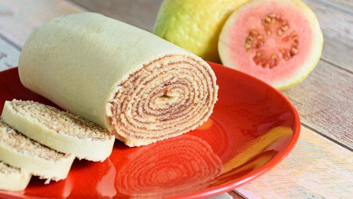

BOLO DE ROLO

Ingredientes:
• 200g de margarina
• 200g de açúcar
• 6 gemas
•200g de farinha de trigo
• 6 claras em neve
• Óleo para untar
| Recheio |
• 500g de goiabada
• 1/2 xícara de água
Modo de Preparo:
| Massa |
1. Bata na batedeira a margarina com o açúcar até formar um creme. Coloque as gemas e continue batendo até ficar cremoso.
2. Junte a farinha de trigo e, por último, as claras em neve.
| Recheio |
1. Leve ao fogo a goiabada com a água e deixer amolecer, ficando como uma geleia mole.
| Montagem |
1. Coloque de 5 a 6 colheres de sopa de massa para assar cada bolo, levando ao forno pré-aquecido por 5 minutos, aproximadamente. Espalhe bem fina a massa na forma.
2. Vire o bolo sobre um pano úmido polvilhado com açúcar, passe uma camada bem fina da goiabada e enrole.
3. Asse o segundo bolo, passe o recheio e enrole com o primeiro bolo. Faça o mesmo procedimento com toda a massa, rende mais ou menos 5 bolos.
4. Por último, povilhe com açúcar.
VOLTAR